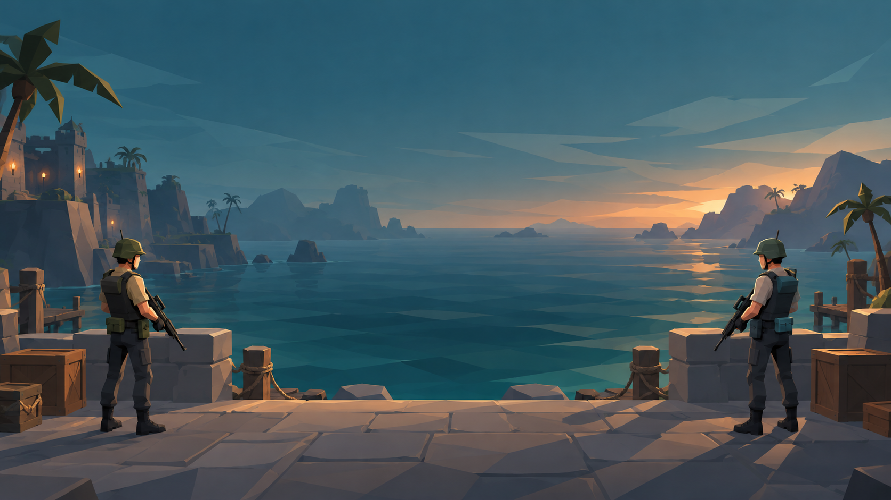
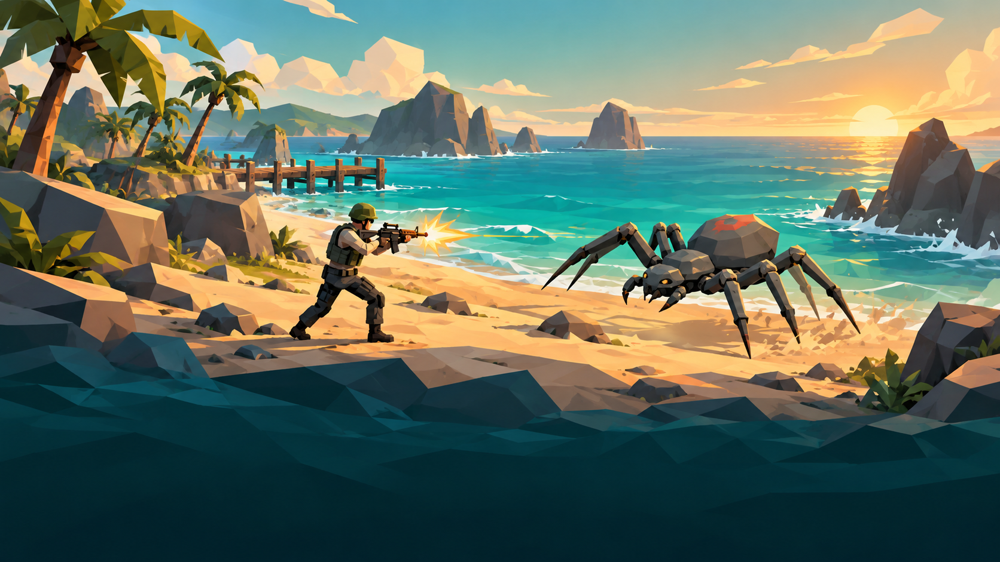
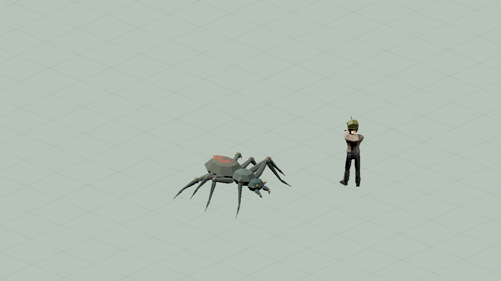

FIREPOWERLOOP / ART DIRECTION / 2026.10.26
三张界面背景 · 设计预览 v1
统一低多边形轮廓、青蓝海岸与暖色光线，让主菜单、联机大厅、加载页形成同一套街机视觉。
AI 概念设计，尚未采用或接入。以下图片不含烘焙文字与按钮；空间预留是构图意图，正式界面的遮挡、裁切与可读性仍需接入前验证。不是游戏截图，也不是精确模型尺寸复刻。
02联机大厅 · 双人并肩出发
两名同体型队员分列两侧，中央保持开阔海面，供房间列表和聊天面板覆盖。背景表达战前集结，不新增基地玩法。

03加载页 · 海岸遭遇战
明亮海岸中呈现主角与蜘蛛交战，下方深色海水留给加载进度与提示文字。使用更清楚的大色块，避免旧图密集细节抢占阅读。

正式造型与比例参考
下列是已接入正式资源的同框回读图片，与上面的 AI 概念图明确区分。正式主角保持原尺寸；本批不改模型、材质、动作或角色体量。
